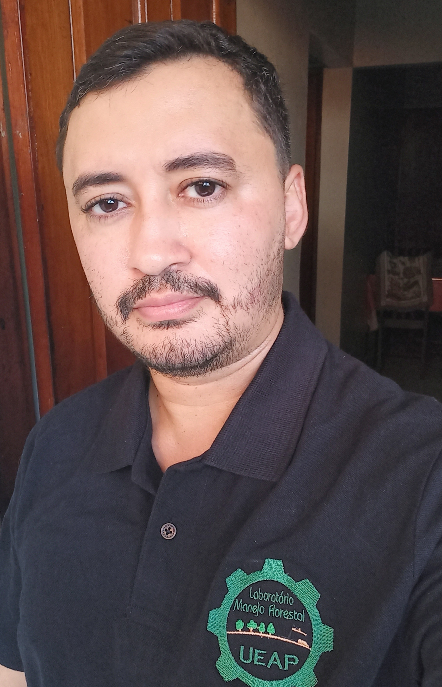

Corpo Docente
Prof. Dr. Fernando Galvão Rabelo
Possui graduação em Engenharia Florestal pela Universidade Federal Rural da Amazônia - UFRA (1991), Mestrado em Ciências Florestais pela mesma Universidade, concluído em dezembro de 2000 e Doutorado em BIODIVERSIDADE E BIOTECNOLOGIA REDE BIONORTE. Linha de Pesquisa: Conhecimento da Biodiversidade. Atualmente exerce a função de Professor Adjunto VII na Universidade do Estado do Amapá. Têm experiência na área de Recursos Florestais, atuando principalmente nos seguintes temas: Silvicultura Tropical, Fitossociologia, Inventário, SAFs e Incêndios Florestais.
Prof. Dr. Jadson Coelho de Abreu
Possui Graduação em Engenharia Florestal na Universidade do Estado do Amapá UEAP (2010), Graduação em Matemática na Universidade Estácio de Sá (2021), Mestrado em Ciências Florestais na Universidade Federal Rural de Pernambuco UFRPE (2012) e Doutorado em Ciência Florestal na Universidade Federal de Viçosa UFV (2019). Atualmente é Professor Adjunto na Universidade do Estado do Amapá UEAP. É líder do grupo de pesquisa métodos quantitativos aplicados aos recursos florestais. Atua como professor permanente no Programa de Pós-graduação em recursos naturais da Amazônia (RENAmazon-UEAP) e no programa em Propriedade Intelectual e Transferência de Tecnologia para Inovação (PROFNIT), ponto focal UNIFAP. Tem experiência na área de Recursos Florestais e Engenharia Florestal, com ênfase em Manejo e Mensuração Florestal, atuando principalmente nos seguintes temas: Dendrometria e Inventário Florestal, modelos estatísticos (lineares e não lineares), modelos mistos, regressão robusta e aprendizado de máquina (Redes Neurais Artificiais, Máquina de Vetor de Suporte, Árvore de Decisão e Random Forest).
Prof. Dr. Perseu da Silva Aparício
Possui Graduação em Engenharia Florestal (2006), Mestrado em Ciências Florestais (2008), Doutorado em Biodiversidade Tropical (2013). É Professor da Universidade do Estado do Amapá. Tem experiência na área de Recursos Florestais e Engenharia Florestal, com ênfase em Manejo Florestal, atuando principalmente nos seguintes temas: Dendrometria, Estatística e Experimentação Florestal e Inventário Florestal. Com experiência em Montagem e Execução de Projetos, Procedimentos de laboratório e Docência.
Prof. Dr. Robson Borges de Lima
Possui Graduação em Engenharia Florestal pela Universidade do Estado do Amapá (2011), Mestrado (2012-2014) e Doutorado (2014-2017) em Ciências Florestais pelo Programa de Pós-graduação em Ciências Florestais da Universidade Federal Rural de Pernambuco. Atualmente é docente do curso de Engenharia Florestal da Universidade do Estado do Amapá. Tem experiência na área de Recursos Florestais e Engenharia Florestal, com ênfase em Métodos Estatísticos, Mensuração, Inventário e Manejo Florestal.
Analista
Eng. Ftal. Odilon Portal Neves
Formado em Engenharia Florestal pela Universidade do Estado do Amapá (UEAP) . Desenvolveu atividades de iniciaçãe científica no projeto Aspecto da Ecologia e Manejo de Andirobeiras em Áreas de Várzea durante 2 anos, com apoio do CNPQ, SETEC, SEMA, UEAP E EMBRAPA-AP.